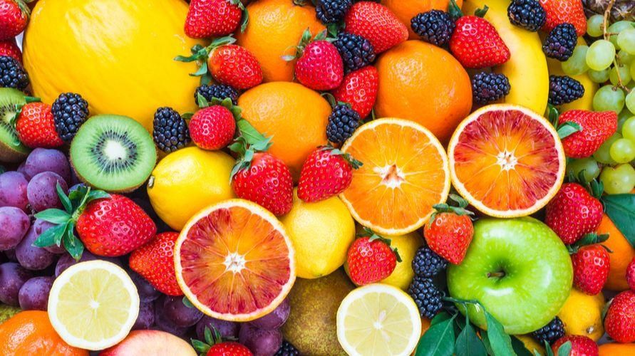

Kami mempunyai untuk menyediakan buah berkualitas bagi masyarakat sekitar dengan herga terjangkau. Dengan dedikasi kami terhadap kualitas dan pelayanan terhadap pelanggan, Toko Buah Borneo telah berkembang pesat, melayani pelanggan di berbagai lokasi di pontianak dan sekitarnya.

Toko Buah ini selain menjual buah-buahan lokal dan impor toko ini juga menerima pemberian jasa seperti mengantar buah ke rumah pelanggan,membuat juice,buah potong bahkan pembuatan rujak untuk acara meeting dan acara lainnya